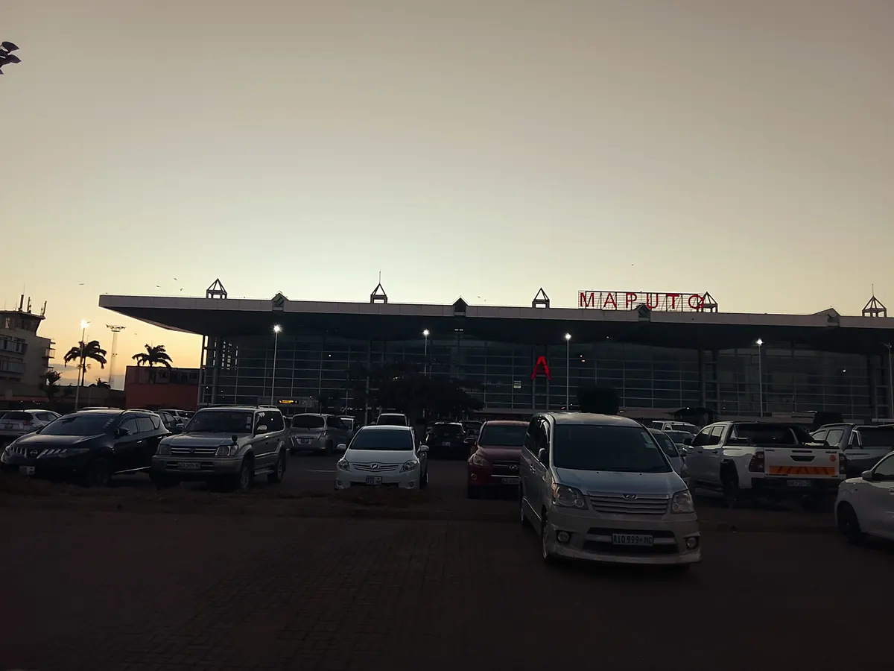
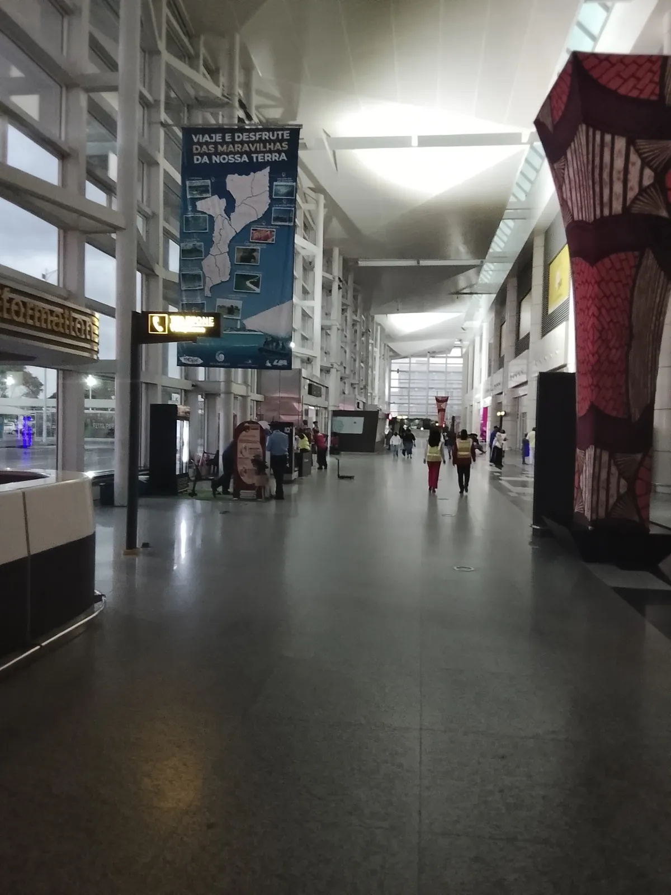
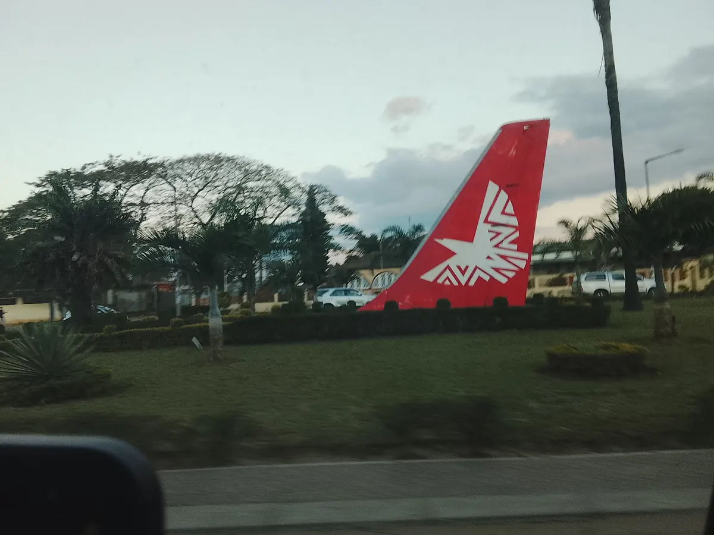
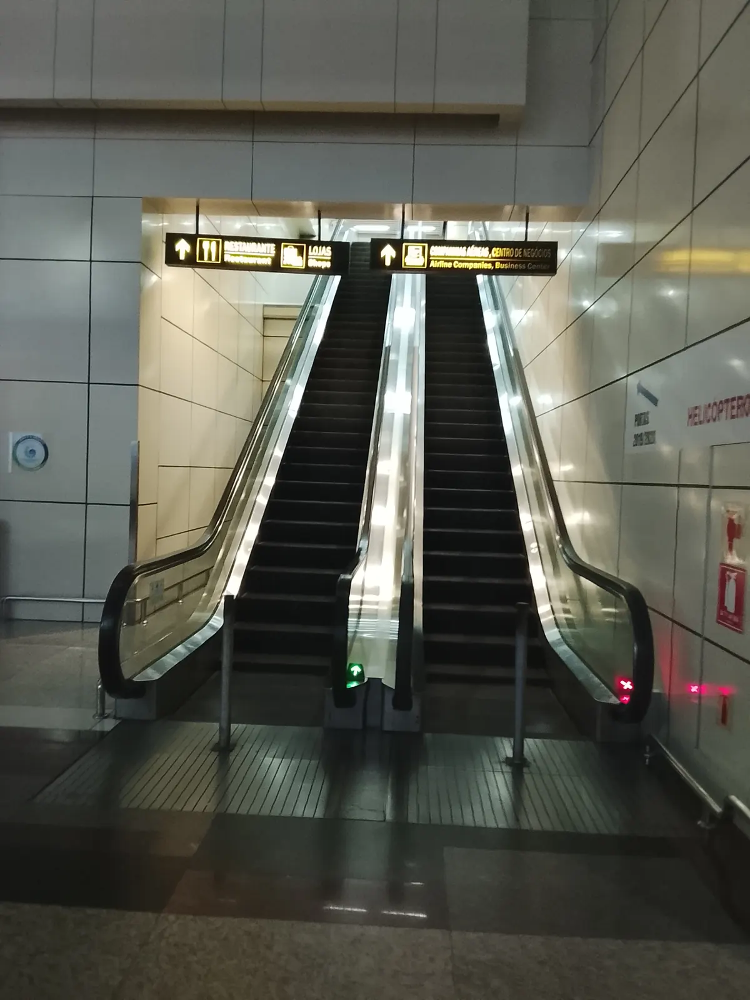
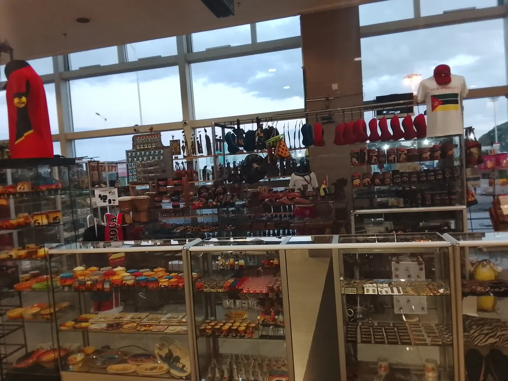
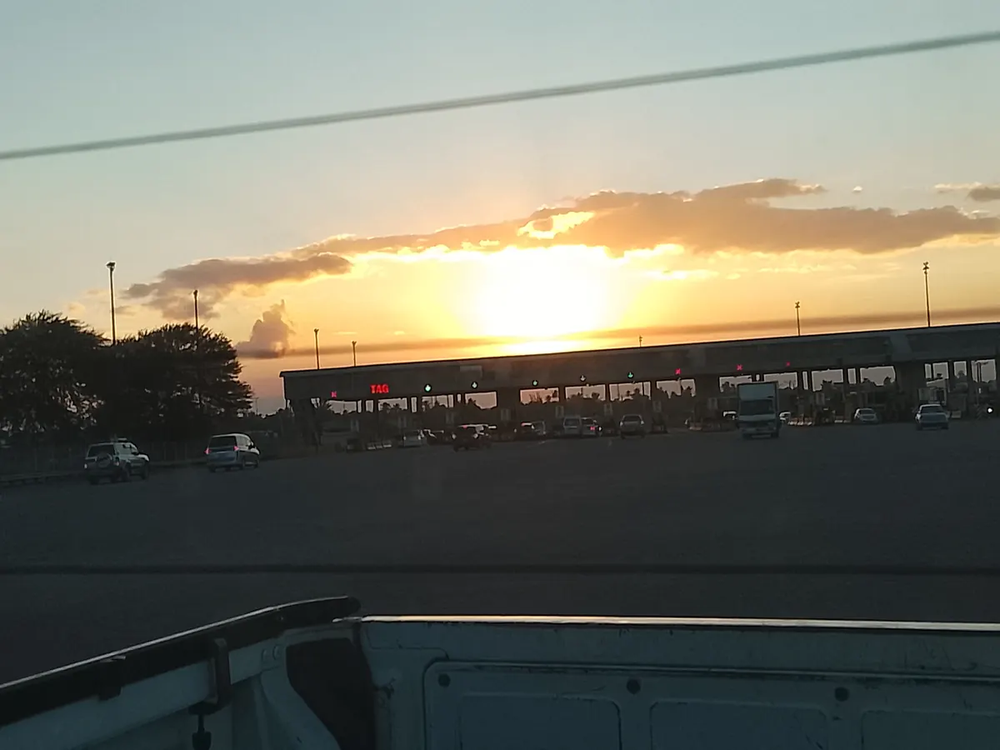

Maputo International Airport (MPM) is Mozambique's main gateway, with direct connections from Europe, the Middle East, and several African cities. If your starting point isn't listed below, expect at least one connection — most commonly through Johannesburg, Doha, or Addis Ababa.
- Main airport: Maputo Intl. (MPM)
- From Europe: Lisbon only (TAP)
- From the Middle East: Doha only (Qatar Airways)
- No direct flights from: the Americas, Asia, Oceania
| Departure City | Country | Departure Airport | Airline(s) | Approximate Flight Time | Frequency |
|---|---|---|---|---|---|
| Lisbon | Portugal | LIS | TAP Air Portugal | 11 h | 3 times per week |
| Doha | Qatar | DOH | Qatar Airways | 8 h | Daily |
| Addis Ababa | Ethiopia | ADD | Ethiopian Airlines | 5 h 20 min | Daily |
| Johannesburg | South Africa | JNB | Airlink, LAM | 1 h 10 min | Multiple flights per day |
| Cape Town | South Africa | CPT | Airlink | 2 h 50 min | Daily |
| Durban | South Africa | DUR | Qatar Airways | 1 h 10 min | 3 times per week |
| Luanda | Angola | LAD | TAAG Angola Airlines | 4 h | Several times per week |
| Harare | Zimbabwe | HRE | LAM | 1 h 40 min | Several times per week |
Note: Flight times and frequencies are approximate and may change throughout the year. Please check with the airline before planning your trip.
Good to Know Before You Book
- Book early for peak season. May–October (dry season) is when most routes fill up fastest, especially the Johannesburg-Maputo hop used by many travelers combining Mozambique with a South Africa or Kruger safari trip.
- No direct flights from the Americas or Asia. If you're coming from outside Europe, the Middle East, or Africa, expect at least one connection — commonly via Doha, Addis Ababa, or Johannesburg.
- Alternative airports exist. Depending on where in Mozambique you're headed, flying into Beira, Nampula, Vilanculos, or Pemba directly (via LAM, domestically) can save time versus routing everything through Maputo first.
- Check visa requirements before booking. Entry requirements depend on your nationality — see the Entry Requirements section on the homepage before finalizing your trip.
- Airport transfers. Maputo International Airport is about a 15-20 minute drive from the city centre; metered taxis and ride-hailing apps are both available on arrival.
Arriving in Maputo — In Photos
A first-hand look at what to expect when you land — these photos were taken on a real arrival at Maputo International Airport.
-

The Terminal
Compact and easy to navigate — most gates are within a short walk of each other.
-

A Warm Welcome
Banners promoting Mozambique's own attractions greet arriving passengers in the terminal.
-

LAM, the National Carrier
Linhas Aéreas de Moçambique connects the capital to every major city in the country.
-

Getting Around Inside
Clear bilingual signage (Portuguese/English) throughout makes the terminal easy for first-time visitors.
-

Last-Minute Souvenirs
A souvenir shop near the terminal sells flags, crafts, and Mozambique-branded clothing.
-

Heads Up: Toll Roads
The main highway into the city has toll booths — keep some small cash (meticais) on hand for the ride in.